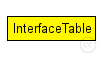

This documentation is released under the Creative Commons license
This documentation is released under the Creative Commons licenseKeeps the table of network interfaces.
Interfaces are dynamically registered by the corresponding L2 modules, e.g. ~PPPInterface. In addition to registered interfaces, a loopback interface will also be created. This table only contains protocol-independent properties of interfaces -- IPv4 or IPv6 specific per-interface data (addresses etc) are kept in ~RoutingTable and ~RoutingTable6. Must be named as "interfaceTable".
This module has no gates; all functionality can be accessed via member functions of the C++ module class. For detailed info, please see the C++ documentation of the class (Doxygen).
Author:: Andras Varga
The following diagram shows usage relationships between types. Unresolved types are missing from the diagram. Click here to see the full picture.
The following diagram shows inheritance relationships for this type. Unresolved types are missing from the diagram. Click here to see the full picture.
| Name | Type | Default value | Description |
|---|---|---|---|
| displayAddresses | bool | true |
whether to display IP addresses on links |
| Name | Value | Description |
|---|---|---|
| display | i=block/table |
// // Keeps the table of network interfaces. // // Interfaces are dynamically registered by the corresponding L2 modules, e.g. // ~PPPInterface. In addition to registered interfaces, a loopback interface // will also be created. This table only contains protocol-independent // properties of interfaces -- IPv4 or IPv6 specific per-interface data // (addresses etc) are kept in ~RoutingTable and ~RoutingTable6. // Must be named as "interfaceTable". // // This module has no gates; all functionality can be accessed via member // functions of the C++ module class. For detailed info, please see the C++ // documentation of the class (Doxygen). // // @author: Andras Varga // simple InterfaceTable { parameters: bool displayAddresses = default(true); // whether to display IP addresses on links @display("i=block/table"); }
This documentation is released under the Creative Commons license